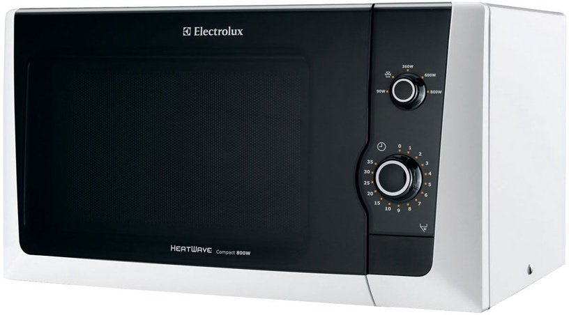

Mikrobangų krosnelės - Panasonic Lietuva
2020.10.30 02:53

Paieška Main menu Gaminiai Televizoriai Kas suteikia galimybę mėgautis tikrais kino teatro pojūčiais? „Netflix“ sukalibruotasis režimas Holivudas jūsų namuose „Dolby Atmos®“ – kas tai? 4K Ultra HD OLED televizoriai Visi 4K Ultra HD OLED televizoriai 4K Ultra HD LED televizoriai Visi 4K Ultra HD LED televizoriai Full HD / HD televizoriai Visi Full HD / HD televizoriai Priedai Visi Priedai Fotoaparatai ir filmavimo kameros „LUMIX“ PASAULINĖS APŽVALGOS IR APDOVANOJIMAI VISO KADRO VAIZDO JUTIKLIS IR JOKIŲ KOMPOMISŲ Fotoaparatas, vertas pasirinkimo –
„Lumix G“ Pagarba ir meilė gyvūnams LUMIX sisteminiai fotoaparatai (DSLM) LUMIX S | viso kadro fotoaparatai LUMIX G | MFT fotoaparatai LUMIX Dėžutės formos kameros LUMIX skaitmeniniai fotoaparatai LUMIX LX | premium fotoaparatai LUMIX TZ | kelioniniai fotoaparatai LUMIX FZ | tarpinio modelio fotoaparatai LUMIX FT | atsparūs vandeniui fotoaparatai LUMIX objektyvai LUMIX S objektyvai | viso kadro LUMIX G objektyvai | MFT Priedai LUMIX S fotoaparatų priedai LUMIX G fotoaparatų priedai Vaizdo kamerų priedai Atminties kortelės Vaizdo kameros 4K Ultra HD vaizdo kameros Full HD vaizdo kameros Garsas „Panasonic“ vakarėliams sukurti TMAX garsiakalbiai Space Tune Blu-Ray ir DVD Blu-Ray grotuvai DVD grotuvai ir įrašantys DVD grotuvai Hi Fi PMX ir PM serija HC serija Didelio galingumo garso sistemos Urban Audio serija AKX serija MAX ir TMAX serija Pailgosios garso sistemos Visi Pailgosios garso sistemos Radijos ir magnetolos Visos radijos ir magnetolos Ausinės Ausinės – Pasirodys netrukus, 2020 m. „Panasonic“ sukurtos HTX serijos „Bluetooth®“ ausinės. SUŽADINS JŪSŲ JAUSMUS Didelės raiškos garsą atkuriančių ausinių kūrimo istorija Dedamos ant ausų Aukščiausios garso kokybės ausinės Belaidės Slopinančios triukšmą TV ausinės su ilgu laidu Visos Dedamos ant ausų Įstatomos į ausis Aukščiausios garso kokybės ausinės Belaidės Sportui Visos Įstatomos į ausis Technics Visos Technics Grožis ir sveikata „Panasonic“ plaukų džiovintuvai su „nanoeTM“ technologija Vyrų priežiūra – Barzdos ir plaukų priežiūra „Panasonic“ epiliatorius – švelni technologija jūsų grožiui „Panasonic“ burnos priežiūra – patikimas ir nuoseklus dantų valymas Moters grožis Epiliatoriai ir skustuvai Plaukų priežiūra Priedai Vyrų priežiūra Barzdaskutės Barzdos / Plaukų kirpikliai Nosies plaukelių kirpikliai Priedai Burnos priežiūra Dantų šepetėliai Burnos irigatoriai Priedai PRO kirpikliai Visi PRO kirpikliai Buitinė technika Mikrobangų krosnelės Mikrobangų krosnelės PRO Mikrobangų krosnelės Smulkūs virtuvės prietaisai Maišytuvas Virtuvės kombainas Namų kepyklėlė Sulčiaspaudės Oro valytuvai Oro valytuvai Telefonai DECT telefonai Visi DECT telefonai Mobilūs telefonai Visi Mobilūs telefonai Priedai Visi Priedai Verslas Komunikacijos sprendimai Kompiuterinės įrangos sprendimai Profesionalios fotografijos sprendimai Vaizdo sistemų sprendimai Saugumo sprendimai PRO kirpikliai Akcijos Palaikymas Kur pirkti FAQ Karjera Verslui Apie mus Įmonės profilis Naujienos Prekės ženklas Tvarumo iniciatyvos Karjera Technologijos ir dizainas [Pasaulinė svetainė] Ryšiai su investuotojais [Pasaulinė svetainė] Gaminiai Gaminiai Peržiūrėti visus produktus Uždaryti Televizoriai Kas suteikia galimybę mėgautis tikrais kino teatro pojūčiais? „Netflix“ sukalibruotasis režimas Holivudas jūsų namuose „Dolby Atmos®“ – kas tai? 4K Ultra HD OLED televizoriai Visi 4K Ultra HD OLED televizoriai 4K Ultra HD LED televizoriai Visi 4K Ultra HD LED televizoriai Full HD / HD televizoriai Visi Full HD / HD televizoriai Priedai Visi Priedai Fotoaparatai ir filmavimo kameros „LUMIX“ PASAULINĖS APŽVALGOS IR APDOVANOJIMAI VISO KADRO VAIZDO JUTIKLIS IR JOKIŲ KOMPOMISŲ Fotoaparatas, vertas pasirinkimo –
„Lumix G“ Pagarba ir meilė gyvūnams LUMIX sisteminiai fotoaparatai (DSLM) LUMIX S | viso kadro fotoaparatai LUMIX G | MFT fotoaparatai LUMIX Dėžutės formos kameros LUMIX skaitmeniniai fotoaparatai LUMIX LX | premium fotoaparatai LUMIX TZ | kelioniniai fotoaparatai LUMIX FZ | tarpinio modelio fotoaparatai LUMIX FT | atsparūs vandeniui fotoaparatai LUMIX objektyvai LUMIX S objektyvai | viso kadro LUMIX G objektyvai | MFT Priedai LUMIX S fotoaparatų priedai LUMIX G fotoaparatų priedai Vaizdo kamerų priedai Atminties kortelės Vaizdo kameros 4K Ultra HD vaizdo kameros Full HD vaizdo kameros Garsas „Panasonic“ vakarėliams sukurti TMAX garsiakalbiai Space Tune Blu-Ray ir DVD Blu-Ray grotuvai DVD grotuvai ir įrašantys DVD grotuvai Hi Fi PMX ir PM serija HC serija Didelio galingumo garso sistemos Urban Audio serija AKX serija MAX ir TMAX serija Pailgosios garso sistemos Visi Pailgosios garso sistemos Radijos ir magnetolos Visos radijos ir magnetolos Ausinės Ausinės – Pasirodys netrukus, 2020 m. „Panasonic“ sukurtos HTX serijos „Bluetooth®“ ausinės. SUŽADINS JŪSŲ JAUSMUS Didelės raiškos garsą atkuriančių ausinių kūrimo istorija Dedamos ant ausų Aukščiausios garso kokybės ausinės Belaidės Slopinančios triukšmą TV ausinės su ilgu laidu Visos Dedamos ant ausų Įstatomos į ausis Aukščiausios garso kokybės ausinės Belaidės Sportui Visos Įstatomos į ausis Technics Visos Technics Grožis ir sveikata „Panasonic“ plaukų džiovintuvai su „nanoeTM“ technologija Vyrų priežiūra – Barzdos ir plaukų priežiūra „Panasonic“ epiliatorius – švelni technologija jūsų grožiui „Panasonic“ burnos priežiūra – patikimas ir nuoseklus dantų valymas Moters grožis Epiliatoriai ir skustuvai Plaukų priežiūra Priedai Vyrų priežiūra Barzdaskutės Barzdos / Plaukų kirpikliai Nosies plaukelių kirpikliai Priedai Burnos priežiūra Dantų šepetėliai Burnos irigatoriai Priedai PRO kirpikliai Visi PRO kirpikliai Buitinė technika Mikrobangų krosnelės Mikrobangų krosnelės PRO Mikrobangų krosnelės Smulkūs virtuvės prietaisai Maišytuvas Virtuvės kombainas Namų kepyklėlė Sulčiaspaudės Oro valytuvai Oro valytuvai Telefonai DECT telefonai Visi DECT telefonai Mobilūs telefonai Visi Mobilūs telefonai Priedai Visi Priedai Verslas Verslas Uždaryti Komunikacijos sprendimai Kompiuterinės įrangos sprendimai Profesionalios fotografijos sprendimai Vaizdo sistemų sprendimai Saugumo sprendimai PRO kirpikliai Akcijos Palaikymas Kur pirkti FAQ Karjera Verslui Apie mus Įmonės profilis Naujienos Prekės ženklas Tvarumo iniciatyvos Karjera Technologijos ir dizainas [Pasaulinė svetainė] Ryšiai su investuotojais [Pasaulinė svetainė] https://myprofile.panasonic.eu/login?lang=en_GB&{0} /servlet/saml/logout4eu?{0}
Peržiūrėti viską: Mikrobangų krosnelės
Sužinokite daugiauConsumer Buitinė technika Mikrobangų krosnelės Buitinė technika Mikrobangų krosnelės
Mikrobangų krosnelės
Išsirinkite tinkamiausią jums
Sužinokite daugiauInverterio technologija – naujas būdas maistui ruošti
Experience Fresh
1 - 17 iš 17 rezultatų
NN-GT45KW
Erdvioje 31 l mikrobangų krosnelėje su 1100 W kvarciniu keptuvu paruošite maisto visai šeimai.
NN-CS894SEPG
Šiuolaikiškam ir sveikam gyvenimui.
NN-DS596MEPG
Paruoškite šviežius gurmaniškus patiekalus su minimaliomis pastangomis – naudokite „Panasonic“ garinę kombinuotąją krosnelę. Šioje krosnelėje naudojama „Turbo Steam“ garų funkcija – tai sveikas būdas gaminti maistą, išsaugant vitaminus, o su funkcija „Panacrunch“ kiekvienas patiekalas tolygiai ir tobulai iškepa, todėl ji puikiai tinka ruošiant neriebius maisto patiekalus ant grotelių. Dar niekad nebuvo taip paprasta gaminti šviežią ir sveiką maistą.
NN-CD575MEPG
Plona, su ventiliatoriumi viršuje „Slim-Line“ pateikia tikros krosnelės rezultatus.
NN-DF383BEPG
Kompaktiška sudėtinio kepimo mikrobangų krosnelė
NN-GD452WEPG
Ši Panasonic kompaktiška inverterinė mikrobangų krosnelė apskrudina ir apkepa kaip įprasta orkaitė bet su visais mikrobangų krosnelės ypatumais, siūlanti 116 Auto programų skaniems ir kvapniems patiekalams.
NN-GD38HSSUG
• Mikrobangų krosnelė su keptuvo funkcija ir virimo garuose priedu
• Gaminimas garuose + keptuvėje: lengvai gaminkite garuose, virinkite, kepkite ant grotelių ir gaminkite ant grotelių garuose
• 17 automatinių programų
NN-GD36HMSUG
• Mikrobangų krosnelė su keptuvo funkcija ir virimo garuose priedu
• Gaminimas garuose + keptuvėje: lengvai gaminkite garuose, virinkite, kepkite ant grotelių ir gaminkite ant grotelių garuose
• 17 automatinių programų
NN-GD34HWSUG
13 automatinių programų
NN-SD452WEPG
„Inverter“ mikrobangų krosnelė„Solo Inverter“ mikrobangų krosnelė
NN-K12JMMEPG
800 W mikrobangų krosnelė su 1000 W kvarciniu keptuvu maistui paskrudinti.
NN-K10JWMEPG
800 W mikrobangų krosnelė su 1000 W kvarciniu keptuvu maistui paskrudinti.
NN-J161MMEPG
800 W kompaktiška mikrobangų krosnelė su keptuvo funkcija ir balta apdaila
NN-J151WMEPG
800 W kompaktiška mikrobangų krosnelė su keptuvo funkcija ir balta apdaila
NN-E22JMMEPG
Kompaktiška ir paprasta naudoti 20 l 800 W mikrobangų krosnelė.
NN-E20JWMEPG
Kompaktiška ir paprasta naudoti 20 l 800 W mikrobangų krosnelė.
NN-SD271S
950W nerūdijančio metalo išvaizdos, kompaktiška inverterinė mikrobangų krosnelė
Kitos kategorijos
Gaminiai
Namų pramogos Televizoriai Fotoaparatai ir filmavimo kameros LUMIX skaitmeniniai aparatai LUMIX G objektyvai | MFT Vaizdo kameros Video kamerų priedai LUMIX S | viso kadro fotoaparatai LUMIX S objektyvai | viso kadro LUMIX S fotoaparatų priedai Atminties kortelės LUMIX G | MFT fotoaparatai LUMIX G fotoaparatų priedai Vaizdo kamerų priedai LUMIX Dėžutės formos kameros Garsas Blu-Ray ir DVD Namų kino sistemos Belaidžių garsiakalbių sistemos Pailgosios garso sistemos Hi Fi Priedai Radijos ir magnetolos Didelio galingumo garso sistemos Ausinės Dedamos ant ausų Įstatomos į ausis Technics Buitinė technika Mikrobangų krosnelės Smulkūs virtuvės prietaisai Oro valytuvai Grožis ir sveikata Moters grožis Vyrų priežiūra Burnos priežiūra Telefonai Telefonai Archive Buitinė technika Namų pramogos Ausinės Garsas Fotoaparatai ir filmavimo kameros Telefonai Grožis ir sveikata Spausdinti Regionas / ŠalisCopyright © 2020 Panasonic Marketing Europe GmbH
Apie mus Privatumo politika Slapukų politika Sąlygos ir nuostatos Svetainės žemėlapis Kreipkitės į mus „Panasonic“ 100 metų sukaktis FAQ- Mikrobangų krosnelė
- MIKROBANGŲ KROSNELĖS – ĮVAIRŪS MODELIAI ||1A.LT
- Mikrobangų krosnelė SAMSUNG ME87M/BAL - Topocentras
- Mikrobangų krosnelės | DAEWOO Electronics
- Mikrobangų krosnelė | Pastatomos ir įmontuojamos krosnelės ...
- Mikrobangų krosnelės - Panasonic Lietuva
- MIKROBANGŲ KROSNELĖS virš 380 modelių Žema kaina | Varle.lt
- Mikrobangų krosnelės | Mikrobangų krosnelė su akcija
- Naudojimo instrukcija Mikrobangų krosnelė
- Mikrobangų krosnelė: plastikas arba įmontuotas mikrobangų ...
- Mikrobangų krosnelė
Mikrobangų krosnelėje su šiuo papildomu priedu galite sterilizuoti patiekalus (pavyzdžiui, skardines konservavimui ar kūdikių butelius). Kai kuriuose modeliuose, naudojant dvigubą katilą, mikrobangų krosnelė papildomai atlieka darbo kameros valymą garais. Dvigubą katilą galima plauti indaplovėje.
- MIKROBANGŲ KROSNELĖS – ĮVAIRŪS MODELIAI ||1A.LT
Mikrobangų krosnelė – virtuvės prietaisas, skirtas greitai pašildyti ar paruošti maistą. Mikrobangų krosnelės gali būti pastatomos arba įmontuojamos į baldus. Pastatomos mikrobangų krosnelės yra pigesnės ir lengvai perkeliamos į kitą vietą, o įmontuojamos, nors ir brangesnės, atrodo itin estetiškai, pasižymi didesniu ...
- Mikrobangų krosnelė SAMSUNG ME87M/BAL - Topocentras
Mikrobangų krosnelė yra ne tik maisto pašildymo prietaisas. Ji leidžia greitai atitirpinti produktus bei pagaminti įvairių patiekalų. Pasižvalgykite!
- Mikrobangų krosnelės | DAEWOO Electronics
Mikrobangų krosnelė LG Microwave Oven MS2535GIB 25 L, Touch control, 1000 W, Juodas, 147, 99 € 2-3 d. d. (10) Gamintojas: LG
- Mikrobangų krosnelė | Pastatomos ir įmontuojamos krosnelės ...
naudoti mikrobangų krosnelėse. 3. Nenaudokite šios mikrobangų krosnelės džiovinti laikraščius, drabužius ar kitas medžiagas. Jos gali užsidegti. 4. Kai krosnelė yra nenaudojama, nelaikykite jokių daiktų krosnelės viduje, nes ją galite netyčia įjungti. 5. Prietaiso negalima naudoti mikrobangų ar mišriu režimu, kai
- Mikrobangų krosnelės - Panasonic Lietuva
Mikrobangų krosnelė Electrolux EMM 21000 W. ELECTROLUX mikrobangų krosnelės. nuo 71.00 ...
- MIKROBANGŲ KROSNELĖS virš 380 modelių Žema kaina | Varle.lt
Mikrobangų krosnelė gali būti naudojama įvairioms funkcijoms – paruošti maistą, atitirpinti užšaldytus maisto produktus, greitai pašildyti ir t. t. Siekiant pasirinkti tinkamiausią prietaiso variantą, pirmiausia reikia susipažinti su jo parametrais.
- Mikrobangų krosnelės | Mikrobangų krosnelė su akcija
Mikrobangų krosnelė bus naudinga pagalbininkė kiekvienai šeimai – ir skubantiems jauniems specialistams, ir šeimoms su vaikais, ir vieno asmens namų ūkiams, kai dažnai reikia pašildyti pirmiau paruoštą patiekalą. Tačiau gera mikrobangų krosnelė galės padaryti daug daugiau nei tik pašildyti jau paruoštą valgį!
- Naudojimo instrukcija Mikrobangų krosnelė
Mikrobangų krosnelė - tai elektrinis buitinis prietaisas, mikrobangų principu šildantis maistą. Viduje įmontuotas magnetronas pradeda gaminti mikrobangas vos tik įjungus šį prietaisą į elektros lizdą. Šios bangos mikrobangų krosnelės viduje sklinda įvairiomis kryptimis, todėl ir maistas sušyla tolygiai.
- Mikrobangų krosnelė: plastikas arba įmontuotas mikrobangų ...
DAEWOO Electronics
Mikrobangų krosnelėje su šiuo papildomu priedu galite sterilizuoti patiekalus (pavyzdžiui, skardines konservavimui ar kūdikių butelius). Kai kuriuose modeliuose, naudojant dvigubą katilą, mikrobangų krosnelė papildomai atlieka darbo kameros valymą garais. Dvigubą katilą galima plauti indaplovėje.
Mikrobangų krosnelė – virtuvės prietaisas, skirtas greitai pašildyti ar paruošti maistą. Mikrobangų krosnelės gali būti pastatomos arba įmontuojamos į baldus. Pastatomos mikrobangų krosnelės yra pigesnės ir lengvai perkeliamos į kitą vietą, o įmontuojamos, nors ir brangesnės, atrodo itin estetiškai, pasižymi didesniu ...
Mikrobangų krosnelė yra ne tik maisto pašildymo prietaisas. Ji leidžia greitai atitirpinti produktus bei pagaminti įvairių patiekalų. Pasižvalgykite!
Mikrobangų krosnelė LG Microwave Oven MS2535GIB 25 L, Touch control, 1000 W, Juodas, 147, 99 € 2-3 d. d. (10) Gamintojas: LG
naudoti mikrobangų krosnelėse. 3. Nenaudokite šios mikrobangų krosnelės džiovinti laikraščius, drabužius ar kitas medžiagas. Jos gali užsidegti. 4. Kai krosnelė yra nenaudojama, nelaikykite jokių daiktų krosnelės viduje, nes ją galite netyčia įjungti. 5. Prietaiso negalima naudoti mikrobangų ar mišriu režimu, kai
Mikrobangų krosnelė Electrolux EMM 21000 W. ELECTROLUX mikrobangų krosnelės. nuo 71.00 ...
Mikrobangų krosnelė gali būti naudojama įvairioms funkcijoms – paruošti maistą, atitirpinti užšaldytus maisto produktus, greitai pašildyti ir t. t. Siekiant pasirinkti tinkamiausią prietaiso variantą, pirmiausia reikia susipažinti su jo parametrais.
Mikrobangų krosnelė bus naudinga pagalbininkė kiekvienai šeimai – ir skubantiems jauniems specialistams, ir šeimoms su vaikais, ir vieno asmens namų ūkiams, kai dažnai reikia pašildyti pirmiau paruoštą patiekalą. Tačiau gera mikrobangų krosnelė galės padaryti daug daugiau nei tik pašildyti jau paruoštą valgį!
Mikrobangų krosnelė - tai elektrinis buitinis prietaisas, mikrobangų principu šildantis maistą. Viduje įmontuotas magnetronas pradeda gaminti mikrobangas vos tik įjungus šį prietaisą į elektros lizdą. Šios bangos mikrobangų krosnelės viduje sklinda įvairiomis kryptimis, todėl ir maistas sušyla tolygiai.
DAEWOO Electronics
